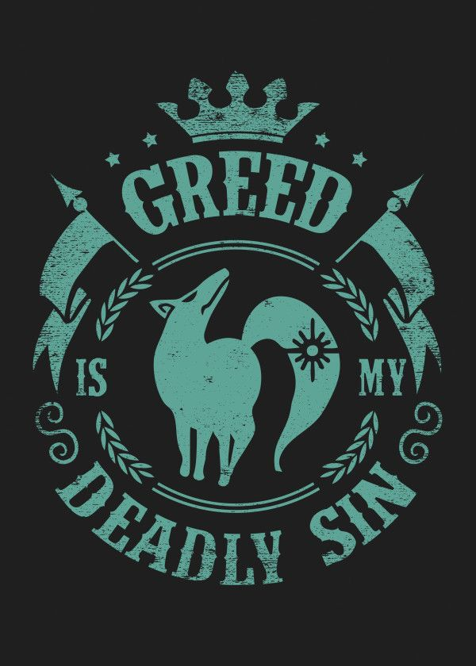

Westerd corp

- Nome: Maximillion Lander
- Data de nascimento: 14.02.2001
- Sexo: Masculino
Garoto de estrutura baixa com um forte apego á seus amigos. Max, como é chamado por todos, não aparenta ter muita gana, mas seu DNA foi o mais compativel com o da best avritiae.
| N° | Nome | Status | Compatibilidade |
|---|---|---|---|
| N° A0415 | Maximillion | Alive | 97,8% |
| N° B1603 | Diana | Alive | 99,5% |
| N° C0968 | Sarah | Alive | 96,9% |
| N° D0615 | Scott | Alive | 98% |
| N° E1867 | Allen | Alive | 99,9% |
| N° F0705 | Jayden | Alive | 95,6% |
| N° G0421 | Leonidas | Alive | 92,7% |
| N° X0001 | Jason | Alive | 100% |